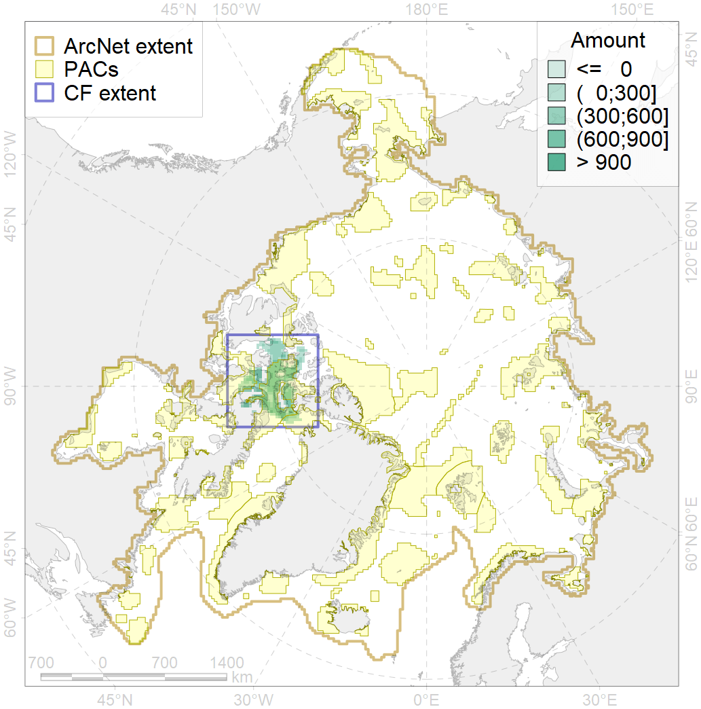
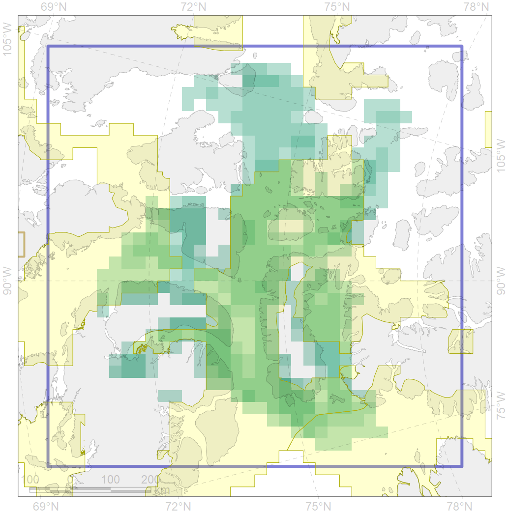

9011

| CF ID | 9011 |
| CF Name | polar bear of the LS (Lancaster Sound) subpopulation distribution |
| Time Period | 1979-2017 |
| Source(s) | Dyck, 2014 a, b; Boertmann, Mosbech, 2017; Platonov, 2018 |
| Seasonality | January - December |
| Depth Horizon | 0 |
| Methodology | Field data, expert opinion, simulation results. |
| Author Name | Evgeniya Melikhova, Stanislav Belikov |
| Notes | |
| Conservation Target Set in the Scenario | 0.324 |
| Conservation Target Achieved in the Scenario | 0.718 (Scenario: 221.7%) |
| PAC ID | Proportion in the PAC | Contribution to ArcNet Target Achievement | PAC’s Contribution to the Achieved Target |
|---|---|---|---|
| 51 | 2.9% | 8.6% | 3.9% |
| 52 | 63.8% | 188.5% | 85.0% |
| 65 | 6.4% | 16.0% | 7.2% |
| inner | 73.1% | 213.1% | 96.1% |
| outer | 26.9% | 8.6% | 3.9% |